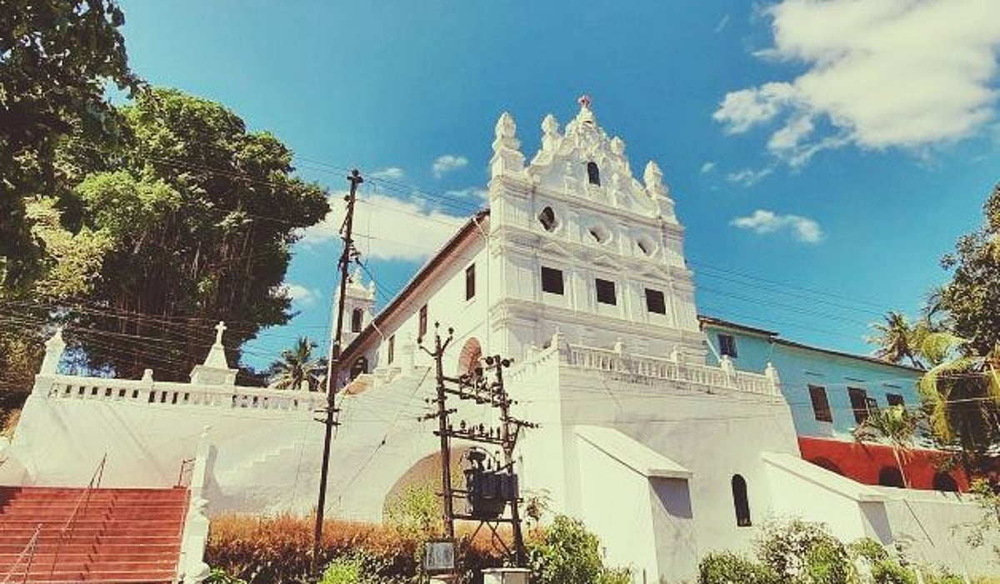

Mae De Deus Church , Pomburpa

Pomburpa Church, officially known as **Our Lady of the Immaculate Conception Church**, is a historic Catholic church located in Pomburpa, Goa. Built in the early 17th century, it is one of the oldest parish churches in the state. The church is renowned for its beautiful white façade, classic Goan-Portuguese architecture, and scenic location overlooking lush greenery. It is dedicated to the Immaculate Conception of the Virgin Mary, reflecting strong Marian devotion. The annual parish feast held in December draws many devotees and visitors. Serving as a spiritual and cultural landmark, Pomburpa Church continues to preserve Goa’s Christian heritage.
Message from Parish Priest
fr. Agnelo Rodrigues
Parish priest
Dear brothers and sisters in Christ,
Welcome to our parish community! Here, we gather as one family of faith, united in love and guided by the Gospel of Jesus Christ. Our church is not just a place of worship, but a home where hearts are lifted, friendships are formed, and lives are renewed. We invite you to join us in prayer, service, and fellowship as we grow closer to God together. May this parish be a source of peace, hope, and joy for you and your family.
In Christ’s love,
FR Agnelo Rodrigues
Message from Deccan
Dear brothers and sisters in Christ,
Welcome to our parish community! Here, we gather as one family of faith, united in love and guided by the Gospel of Jesus Christ. Our church is not just a place of worship, but a home where hearts are lifted, friendships are formed, and lives are renewed. We invite you to join us in prayer, service, and fellowship as we grow closer to God together. May this parish be a source of peace, hope, and joy for you and your family.
In Christ’s love,
Deccan jofyho